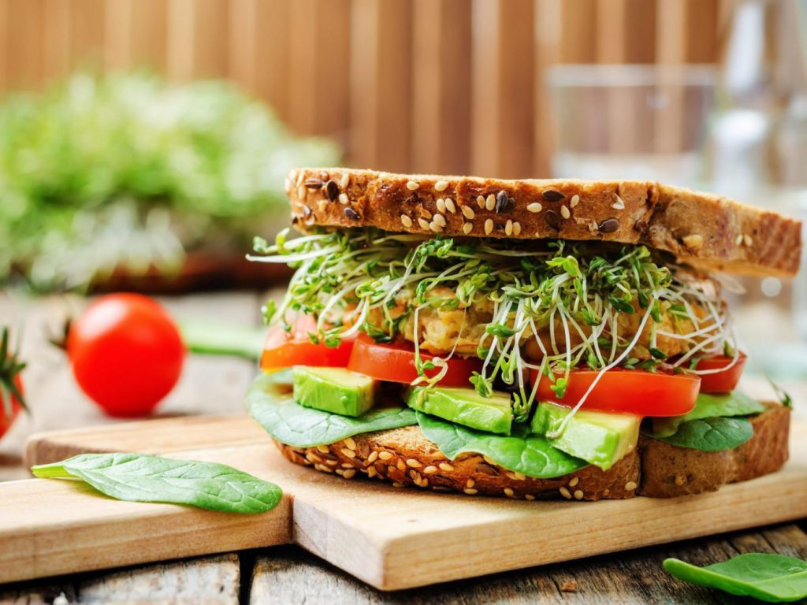
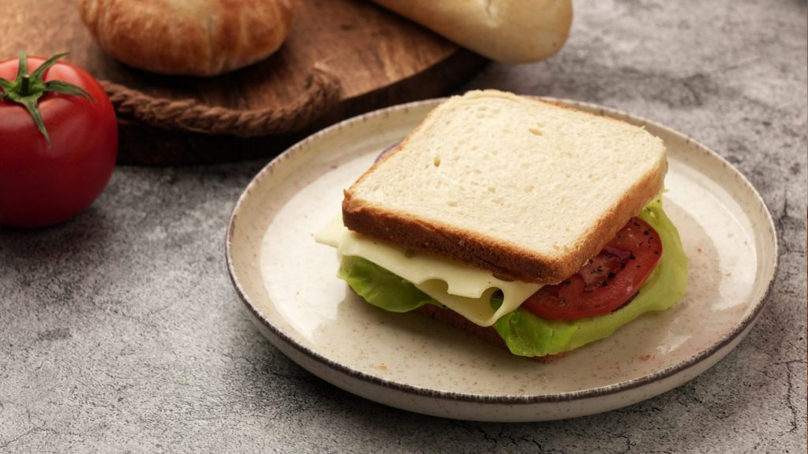
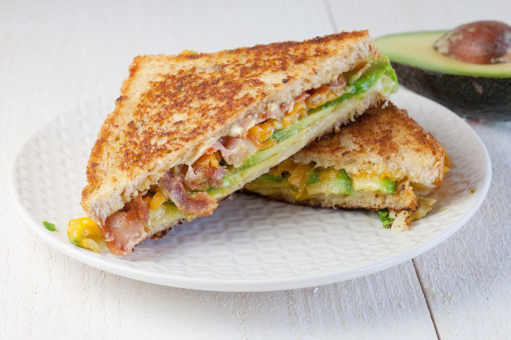
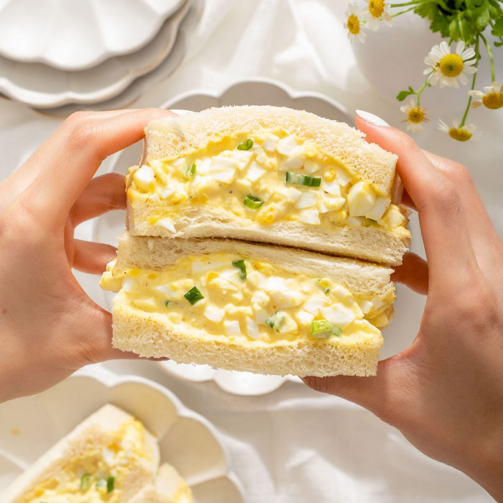
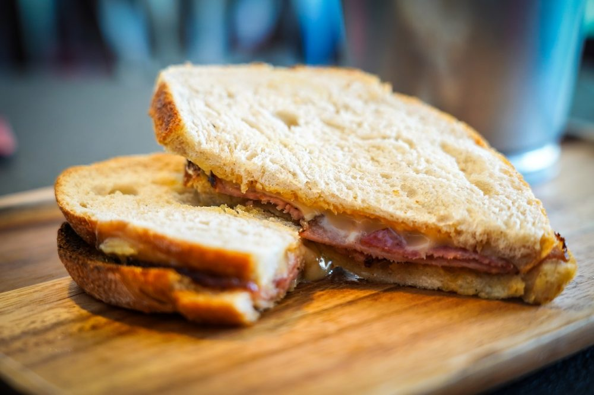
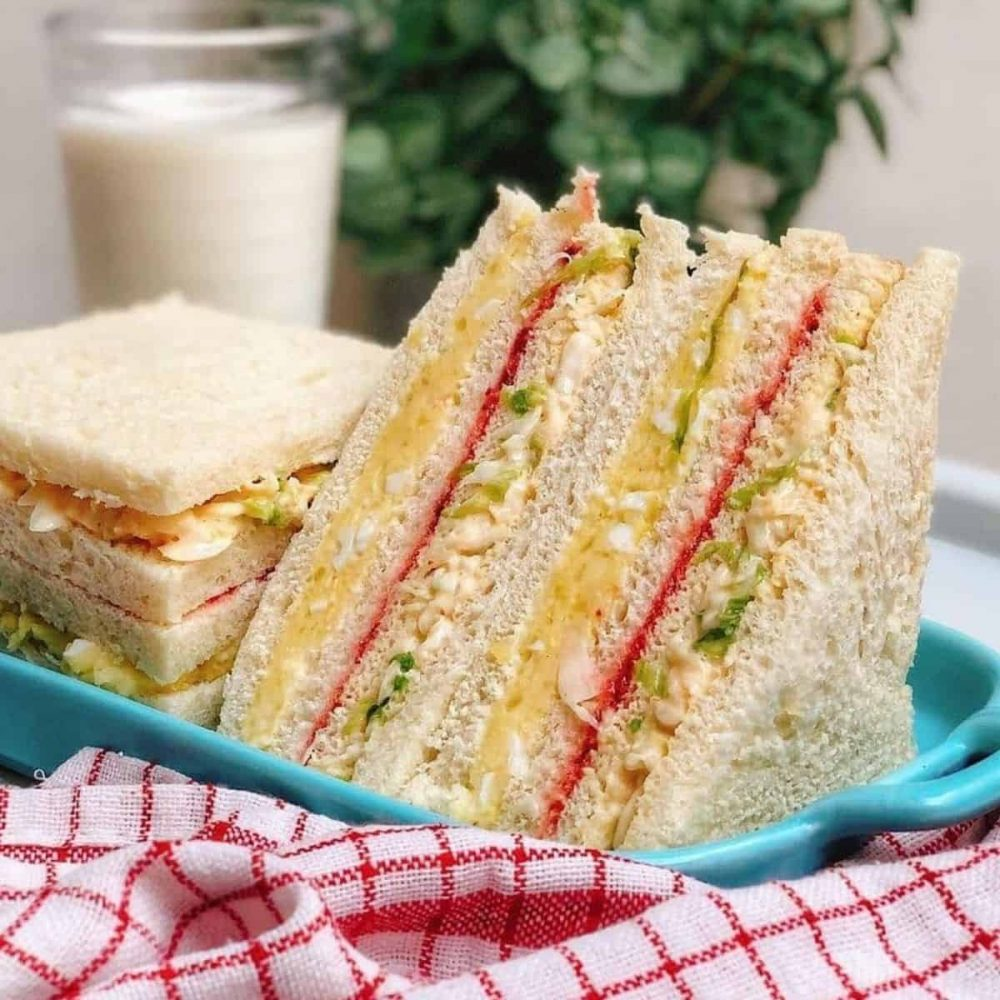
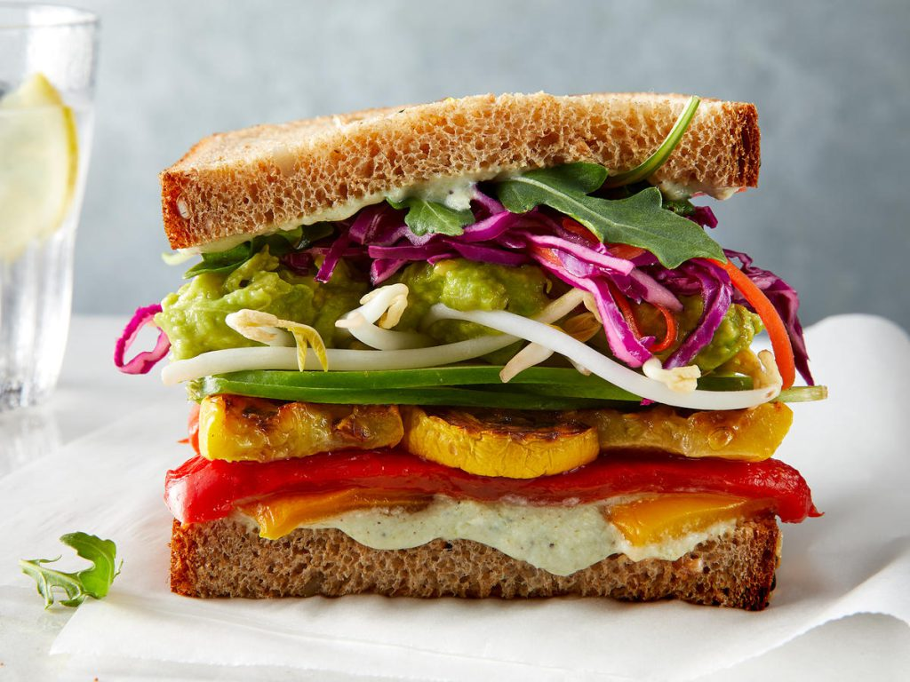

Bánh mì sandwich là món ăn phổ biến được nhiều người lựa chọn trong bữa ăn sáng. Cùng BreadTalk tìm hiểu 1 lát bánh mì sandwich bao nhiêu calo, ăn có béo không? Khi ăn cần lưu ý gì?
Bánh mì sandwich chứa nhiều carbs và tinh bột. Nhiều người thắc mắc 1 lát bánh mì sandwich bao nhiêu calo? Ăn bánh mì sandwich có ảnh hưởng đến quá trình giảm cân không? Bazaar Vietnam sẽ giải đáp những thắc mắc này cho bạn.

Bánh mì sandwich được làm từ ngũ cốc, men hoặc lúa mì cùng nhiều thành phần
khác. Một số loại bánh mì
sandwich được bổ sung thêm các loại hạt nảy mầm hay ngũ cốc nguyên hạt có lợi cho sức khỏe.
Bánh mì sandwich có thể ăn cùng với xúc xích, thịt, chả, hải sản, rau củ, phô mai tùy theo sở
thích
và khẩu vị của từng người.
1 lát bánh mì sandwich có bao nhiêu calo? 1 lát bánh mì sandwich trắng 25g chứa khoảng 67 calo và các chất dinh dưỡng sau:
• 13g carbs
• 2g chất đạm
• 1g chất béo
• 0,6g chất xơ
• 8% RDI vitamin B1 - RDI là giá trị dinh dưỡng được khuyên dùng mỗi ngày
• 5% RDI vitamin B2
• 5% RDI vitamin B3
• 7% vitamin B9
• 7% RDI natri
• 6% RDI mangan
• 6% RDI selen
• 5% RDI sắt
Khi đã biết một lát bánh mì sandwich bao nhiêu calo, bạn cũng dễ dàng tính được 4 lát bánh mì sandwich bao nhiêu calo? 5 lát bánh mì sandwich bao nhiêu calo?
Theo đó, 4 lát bánh mì sandwich chứa 268 calo; 5 lát bánh mì sandwich có 335 calo.
Như vậy, 1 bịch bánh mì sandwich bao nhiêu calo? 1 bịch bánh mì sandwich trắng có khoảng 10 - 12 lát bánh mì, hàm lượng calo dao động từ 670 - 800.

Hàm lượng calo và các thành phần dinh dưỡng trong bánh mì sandwich có thể cao hơn hoặc thấp hơn phụ thuộc vào từng loại bánh mì. 100g bánh mì sandwich chứa bao nhiêu calo? 200g bánh mì sandwich bao nhiêu calo?
• 100g bánh mì sandwich trắng (sandwich lúa mì) chứa khoảng 268 calo
• 100g bánh mì sandwich đen (sandwich lúa mạch) chứa khoảng 235 calo
• 100g bánh mì sandwich bột thô chứa khoảng 235 calo
• 100g bánh mì sandwich gạo lứt chứa khoảng 250 calo
• 100g bánh mì sandwich hạt lanh chứa khoảng 285 calo
• 100g bánh mì sandwich vừng chứa khoảng 255 calo
• 100g bánh mì sandwich hamburger chứa khoảng 296 calo
• 100g bánh mì sandwich nguyên cám chứa khoảng 260 calo
Dưới đây là hàm lượng calo của bánh mì sandwich trắng khi kết hợp với các nguyên liệu khác:
Bơ đậu phộng hay bơ lạc được chế biến bằng cách xay hoặc nghiền nhuyễn các thành phần bơ, đường cát và dầu ăn. 100g bơ đậu phộng có khoảng 573 calo. Vậy 1 lát bánh mì sandwich bơ đậu phộng bao nhiêu calo? Hàm lượng calo có trong 1 lát bánh mì sandwich trắng và 10g bơ đậu phộng là 124.

100g bánh mì sandwich kẹp bơ rau xanh chứa khoảng 332 calo.

1 quả trứng gà có kích cỡ trung bình có khoảng 75 calo. Hàm lượng calo trong 1 lát bánh mì sandwich kẹp trứng, thêm rau xanh và gia vị dao động khoảng 153.
Bánh mì sandwich kết hợp với nho khô làm tăng hương vị món ăn. 100g bánh mì sandwich nho khô chứa khoảng 288 calo.

1 lát bánh mì sandwich kẹp thịt với bơ hoặc phô mai kiểu Pháp, lượng calo có thể lên đến 200 calo.
100g bánh mì bơ sữa chứa các thành phần như: lipid, chất béo bão hòa, natri, kali, protein, đường, carbohydrate, canxi, sắt, magie. Khi kết hợp với bơ và sữa, lượng calo của 100g bánh mì sandwich sẽ dao động từ 290 - 300.

1 lát bánh mì sandwich bao nhiêu calo? Trong 1 lát bánh mì sandwich có hàm lượng calo tương đối thấp, chỉ khoảng 67 calo. Trung bình một người phải ăn từ 3 - 4 lát bánh mì sandwich kèm theo các nguyên liệu khác mới đủ no. Hàm lượng calo nạp vào cơ thể khi ăn bánh mì sandwich vẫn chưa vượt mức tối đa lượng calo nạp vào trong ngày.
Bạn nên chọn ăn bánh mì sandwich vào buổi sáng hoặc buổi ăn nhẹ. Ăn bánh mì sandwich vào buổi sáng sẽ không gây tăng cân. Đây còn là phương pháp giúp giảm cân hiệu quả. Bánh mì sandwich chứa lượng calo vừa phải. Ngoài ra, ăn bánh mì sandwich giúp no lâu, hạn chế được cơn thèm ăn.
Tuy nhiên, trong bánh mì sandwich vẫn chứa hàm lượng tinh bột tương đối cao. Nếu bạn không biết cách ăn phù hợp, ăn kèm với thực phẩm chứa nhiều calo thì vẫn có thể gây tăng cân.
Một số loại bánh mì sandwich dưới đây giúp bạn kiểm soát được hàm lượng calo hấp thụ vào cơ thể, hỗ trợ giảm cân hiệu quả:
• Bánh mì sandwich nguyên cám được chế biến từ bột mì chưa tinh chế. Bánh mì sandwich nguyên cám chứa hàm lượng vitamin, chất xơ và các khoáng chất dồi dào. Đặc biệt, trong bánh mì nguyên cám không có thành phần gluten. Ngoài ra, hàm lượng chất béo có trong bánh mì nguyên cám thấp hơn so với bánh mì thường, phù hợp với chế độ ăn giảm cân.
• Bánh mì sandwich lúa mạch, yến mạch phù hợp với người đang ăn kiêng, người mắc bệnh tiểu đường. Hai loại ngũ cốc này chứa nhiều axit béo và có hàm lượng đường huyết GI thấp. Nhìn chung, bánh mì sandwich làm từ các loại ngũ cốc giúp giảm cholesterol, cải thiện sức khỏe hệ tim mạch. Bánh mì sandwich yến mạch còn giúp no lâu và giảm cảm giác thèm ăn.
• Bánh mì sandwich đen có hàm lượng chất xơ cao, không chứa gluten. Ăn bánh mì đen giúp giảm cân hiệu quả, phù hợp với người có chỉ số đường huyết cao.
• Bánh mì sandwich hạt lanh có nhiều chất xơ và omega 3, ít hàm lượng carbs. Loại bánh mì này giúp kiểm soát cân nặng hiệu quả, ngăn ngừa bệnh tim mạch, tiểu đường và làm giảm tình trạng táo bón, đầy bụng.
• Bánh mì nâu được chế biến từ ngũ cốc nguyên cám gồm cám, mầm, nội nhũ. Trong bánh mì nâu chứa nhiều chất xơ, giúp tiêu hóa chậm hơn, tạo cảm giác lâu đói.
• Bánh mì Ezekiel được làm từ mầm ngũ cốc nguyên hạt, hạt kê, hạt đậu. Loại bánh này chứa nhiều chất dinh dưỡng và vitamin, ít calo, chỉ số đường huyết thấp, phù hợp để ăn kiêng.

Để ăn bánh mì sandwich đúng cách, không ảnh hưởng đến cân nặng và sức khỏe, bạn cần lưu ý những điều sau:
• Khi ăn bánh mì sandwich, bạn nên ăn kèm với trái cây hoặc rau xanh. Hạn chế kết hợp với nhiều dầu mỡ hoặc các thực phẩm chứa nhiều calo.
• Hạn chế dùng nhiều nước sốt, phô mai khi ăn bánh mì sandwich để tránh gây tích tụ mỡ thừa dẫn đến tăng cân.
• Không nên ăn bánh mì sandwich thay thế cơm để tránh gây thiếu hụt dinh dưỡng.
• Hạn chế ăn bánh mì sandwich kẹp thịt đông lạnh. Trong thịt đông lạnh có nhiều chất béo, muối và chất bảo quản không tốt cho sức khỏe.
• Ăn bánh mì sandwich quá nhiều có thể gây nóng trong người, nổi mụn.
• Nên ăn bánh mì sandwich vào buổi sáng, tránh ăn vào buổi tối để không bị đầy bụng, khó tiêu.
• Chú ý thời hạn sử dụng bánh mì sandwich, không ăn bánh quá hạn sử dụng. Bánh mì sandwich thường có hạn sử dụng từ 3 - 4 ngày, dưới 7 ngày/tuần. Nên bảo quản bánh trong ngăn mát tủ lạnh, không để ở nhiệt độ thường hoặc nơi ẩm ướt.
Với những thông tin cung cấp ở trên, hy vọng bạn đã biết 1 lát bánh mì sandwich bao nhiêu calo. Bên cạnh chế độ ăn uống khoa học, bạn nên có kế hoạch rèn luyện thể thao phù hợp để cơ thể khỏe mạnh, vóc dáng được cân đối hơn.